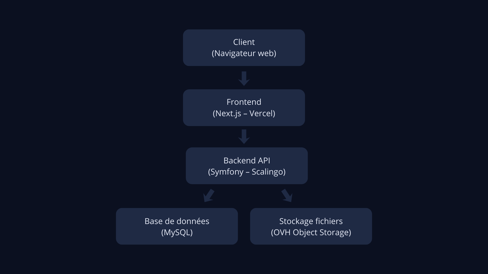

Manaketak
Manaketak est une application web de gestion de commandes de photos scolaires. J’ai conçu et développé ce projet en autonomie, de l’analyse du besoin à la mise en production, avec une architecture full-stack et un déploiement sur Scalingo, Vercel et OVH.
Contexte
L’objectif était de simplifier la gestion des commandes de photos de classe, avec plusieurs types d’utilisateurs (parents, écoles, administrateur) et une logique métier spécifique.
Réalisation
- conception de l’architecture et de la base de données
- développement d’une API REST sécurisée (Symfony, API Platform)
- gestion des rôles utilisateurs
- développement du frontend (Next.js)
- gestion des commandes
- génération de PDF, exports Excel et e-mails
Déploiement
- backend déployé sur Scalingo
- frontend déployé sur Vercel
- stockage des fichiers via OVH Object Storage
- configuration des variables d’environnement
Architecture
L’application repose sur une architecture frontend / backend, avec un stockage externe pour les fichiers.

Le frontend communique avec l’API backend qui gère les données et le stockage.
Démo de l'application
Deux démonstrations courtes montrent les usages côté administrateur et côté parent.
Interface administrateur
Gestion des écoles, des classes et des commandes depuis l’espace admin.
Parcours parent
Consultation des photos et passage d’une commande en quelques étapes.
Projet complet développé en autonomie, de la conception à la mise en production.